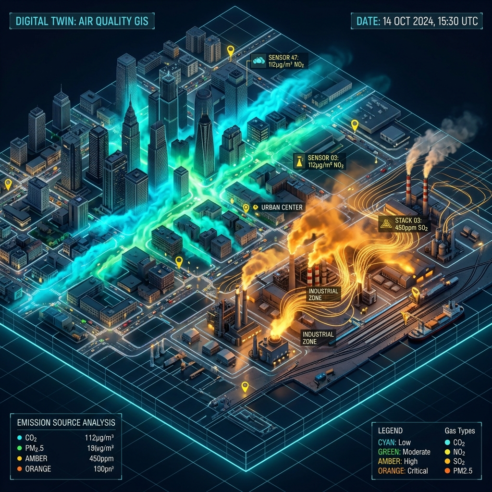
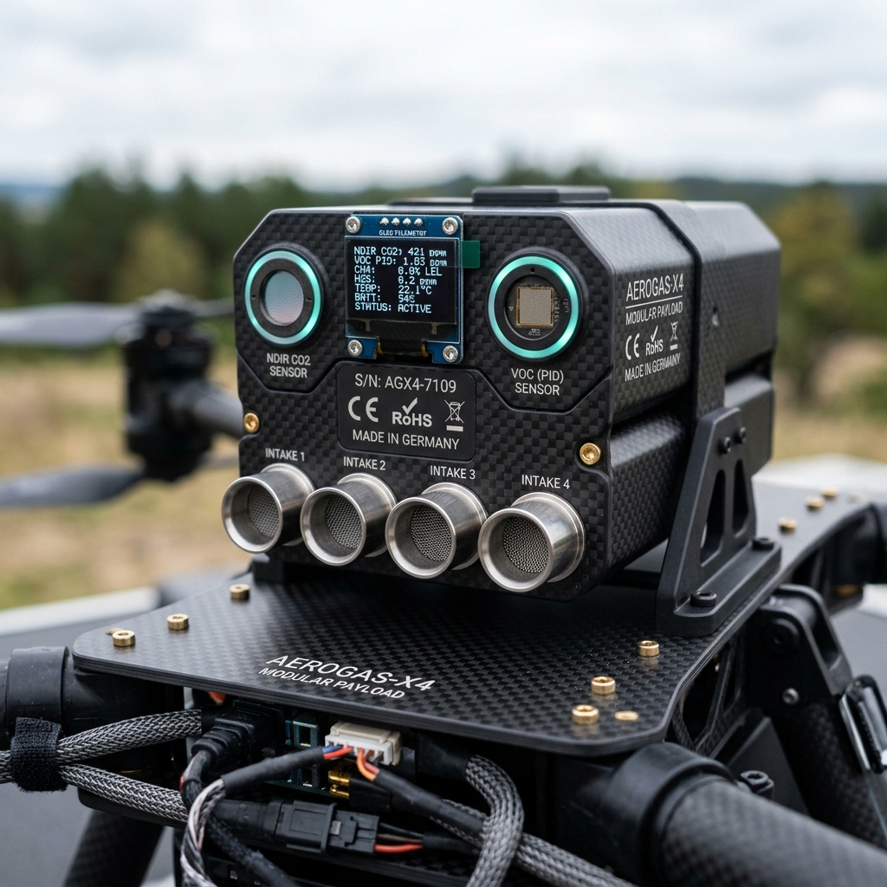
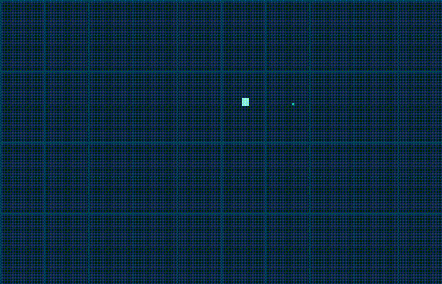
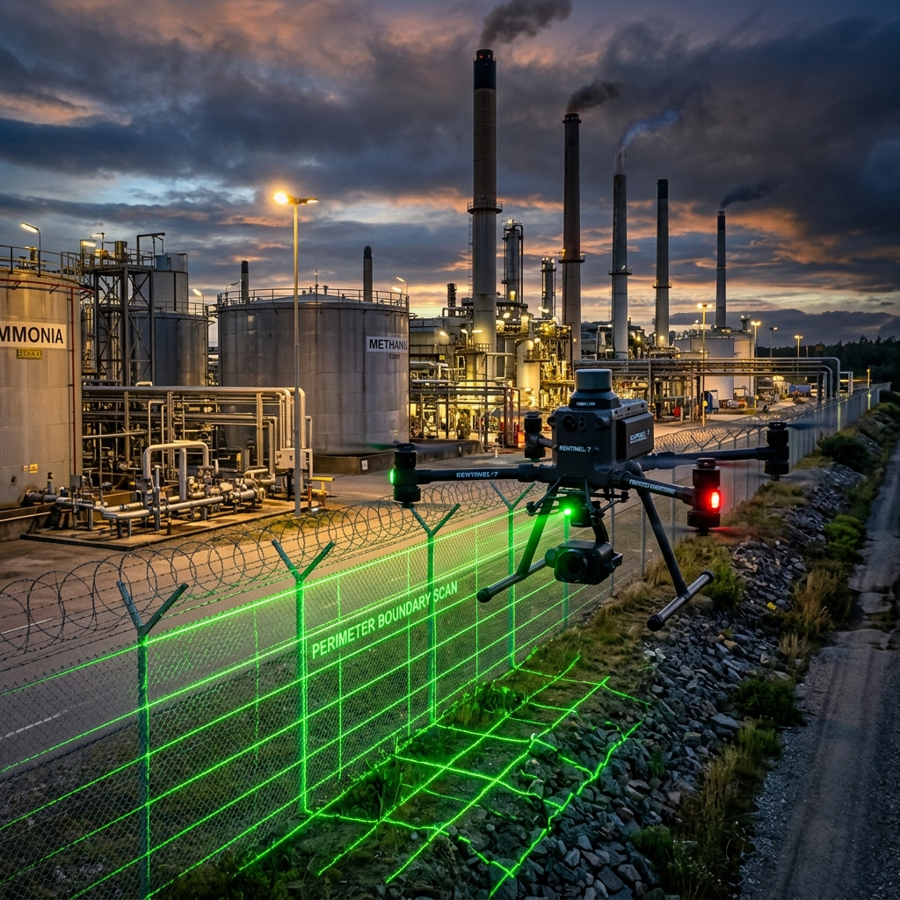
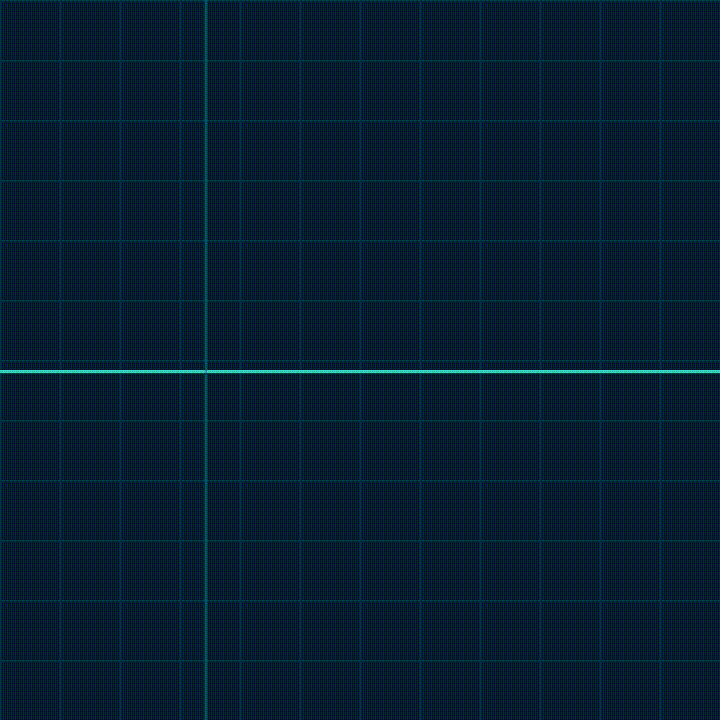

Khoảng trống giữa các trạm
Thiếu dữ liệu không gian để khoanh vùng điểm nóng, xác định hướng nguồn và xử lý phản ánh.
S0289 · Môi trường – Carbon/MRV
UAV đo CO2, NOx và VOCs, lập bản đồ điểm nóng cho đô thị và KCN; hỗ trợ khoanh vùng nguồn và kiểm kê GHG.
Dữ liệu UAV là lớp tham chiếu bổ sung, không thay thế quan trắc tuân thủ.
TỔNG QUAN DỊCH VỤ
UAV đa rotor mang cảm biến CO2 NDIR, NO2/NOx điện hóa và VOC PID bay theo tuyến lưới, ranh giới hoặc cắt ngang plume tùy mục tiêu.
Dữ liệu được QA/QC, thể hiện trên GIS 2D/3D để xác định điểm nóng và vùng cần khảo sát sâu hơn.
Xem cách dịch vụ vận hành →PHỔ DỮ LIỆU CẢM BIẾN



Dữ liệu đồng bộKhí · thời gian · tọa độ
VẤN ĐỀ KHÁCH HÀNG
Thiếu dữ liệu không gian để khoanh vùng điểm nóng, xác định hướng nguồn và xử lý phản ánh.
Ống khói, mái, bồn chứa và vùng sự cố khó đo trực tiếp từ mặt đất.
Dữ liệu thực địa có truy vết hỗ trợ đối chiếu kiểm kê GHG và báo cáo ESG.
NĂNG LỰC CHÍNH
CO2, NO2/NOx, VOCs cùng thời gian, tọa độ, độ cao và khí tượng.
Tuyến lưới, fenceline hoặc cắt ngang plume kết hợp dữ liệu gió.
Zero/span và collocation với thiết bị tham chiếu theo phạm vi dự án.
Phân tích điểm nóng, plume và xuất lớp dữ liệu phục vụ tích hợp.

TÌNH HUỐNG ỨNG DỤNG
Khảo sát có thể điều chỉnh theo khu vực, nguồn phát thải và mục đích sử dụng kết quả.
Phát hiện điểm nóng và vùng cần đo bổ sung giữa các trạm.
Khảo sát fenceline và nội vi để khoanh vùng VOC/NOx nghi ngờ.
→Đo mặt cắt plume, hỗ trợ ước lượng phát thải Level 2 khi đủ điều kiện.
→Khoanh vùng VOC để hỗ trợ ứng phó khi điều kiện an toàn và pháp lý đáp ứng.
→
QUY TRÌNH
Chốt mục tiêu, ranh giới, tuyến bay, độ cao và số chuyến.
Hoàn tất pháp lý; hiệu chuẩn và đối chiếu cảm biến theo phạm vi.
Thu dữ liệu, QA/QC, lập bản đồ GIS và phân tích điểm nóng.
Báo cáo, dữ liệu, bản đồ và khuyến nghị hành động theo hợp đồng.
CẤP ĐỘ DỊCH VỤ
LEVEL 1
Lập bản đồ nồng độ tương đối và định vị điểm nóng để định hướng đo sâu hơn.
LEVEL 2
Hiệu chuẩn, collocation, phân tích plume và đối chiếu ngưỡng với trạng thái rõ ràng.
LEVEL 3
Đo lặp, phân tích xu hướng và xây dựng chuỗi dữ liệu hỗ trợ GHG/MRV/ESG.
Phương án cuối cùng được xác nhận theo mục tiêu, điều kiện hiện trường và phạm vi dự án.
HỎI ĐÁP NHANH
Các câu hỏi phổ biến về phạm vi đo, dữ liệu và điều kiện triển khai.
Trao đổi trường hợp cụ thể →Không. Dữ liệu UAV là lớp tham chiếu bổ sung để tăng độ phủ không gian, khoanh vùng điểm nóng và định hướng khảo sát sâu hơn.
Tùy cấp độ dịch vụ, hồ sơ có thể gồm dữ liệu đã QA/QC, bản đồ GIS 2D/3D, danh sách điểm nóng, phân tích plume và báo cáo khuyến nghị.
Gió, mưa, độ ẩm và độ ổn định khí quyển đều được xem xét khi thiết kế tuyến bay và diễn giải kết quả khảo sát.
Thông tin cơ bản gồm khu vực khảo sát, nguồn nghi vấn, mục tiêu sử dụng dữ liệu, thời gian dự kiến và các yêu cầu an toàn tại hiện trường.
TRỢ LÝ AI S0289
Trợ lý AI sẵn sàng giải đáp về phạm vi đo đa khí, lựa chọn cấp độ dịch vụ (Level 1/2/3), xuất dữ liệu GIS 2D/3D và tư vấn phương án hiện trường.
Chọn câu hỏi bên dưới để xem tương tác mẫu từ Trợ lý:
TRAO ĐỔI NHU CẦU
Hãy cho chúng tôi biết khu vực, mục tiêu và thời gian dự kiến. Đội ngũ sẽ tư vấn phương án phù hợp theo dự án.